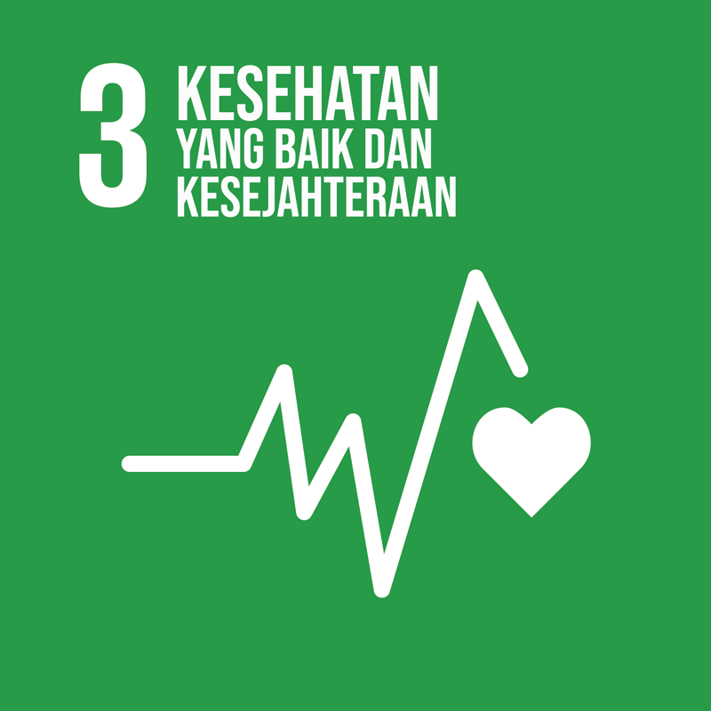
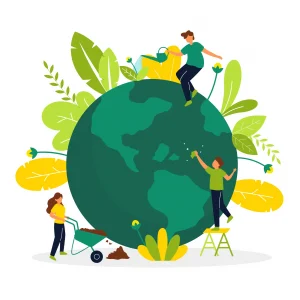
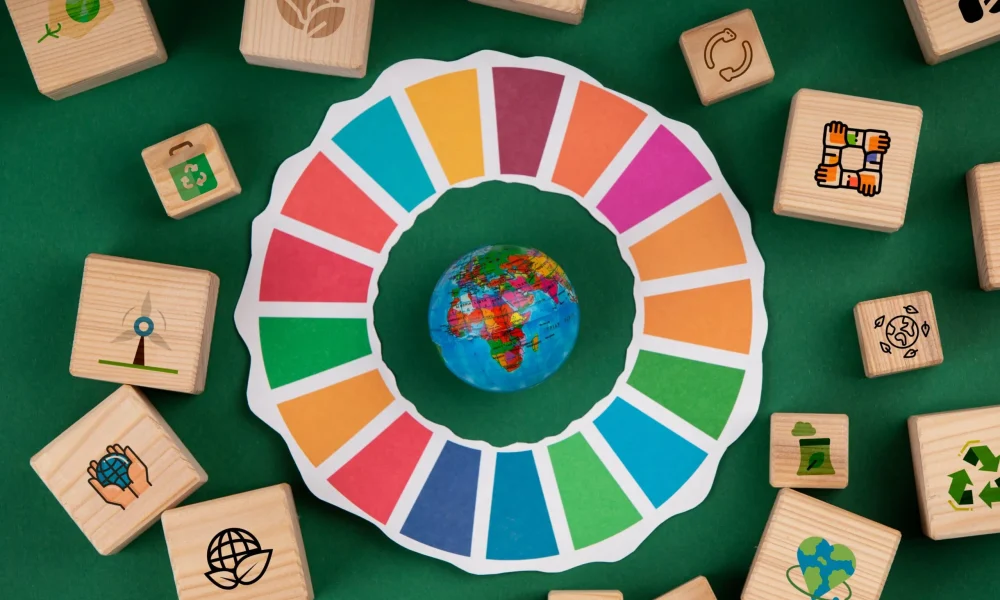
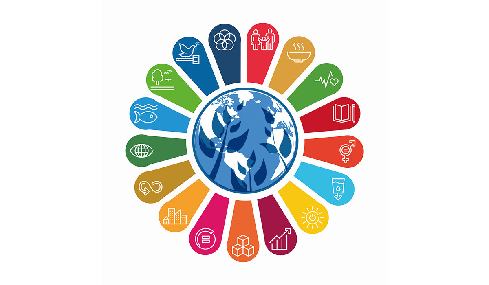
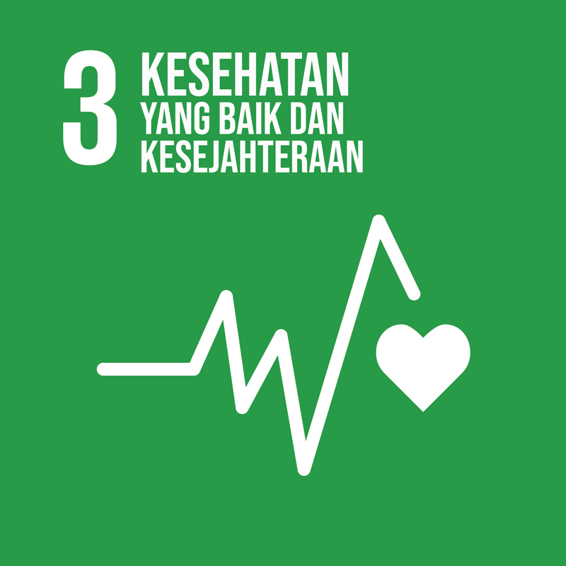
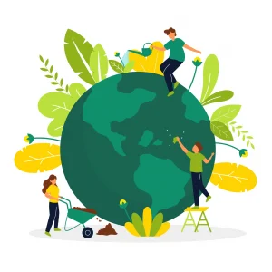
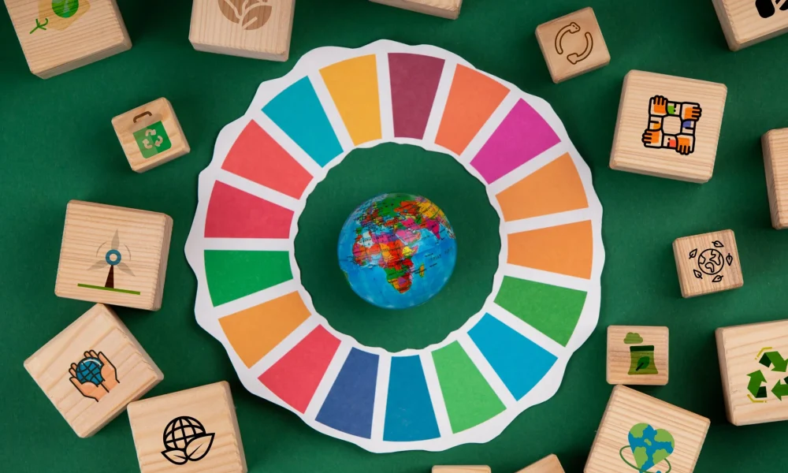
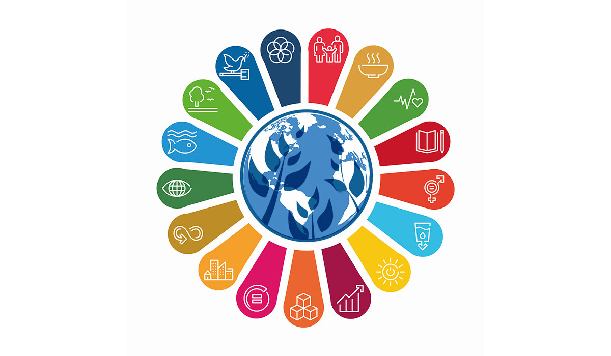

Penjelasan
SDGs atau Sustainable Development Goals adalah sebuah inisiatif global yang terdiri dari 17 tujuan utama
yang disepakati oleh negara-negara anggota Perserikatan Bangsa-Bangsa (PBB) pada tahun 2015 sebagai
bagian dari agenda 2030 Agenda for Sustainable Development. Tujuan utama dari SDGs adalah untuk
mengatasi tantangan-tantangan global yang berkaitan dengan kemiskinan, ketimpangan, perubahan iklim,
degradasi lingkungan, perdamaian, dan keadilan.
Ke-17 tujuan SDGs ini dirancang untuk dicapai dalam jangka waktu hingga tahun 2030 dan mencakup berbagai
aspek pembangunan yang saling terkait. Setiap tujuan SDGs memiliki indikator spesifik untuk mengukur
kemajuan dalam pencapaiannya. Berikut adalah 17 tujuan SDGs:
1. Tanpa Kemiskinan - Mengakhiri kemiskinan dalam segala bentuk di mana pun.
2. Tanpa Kelaparan - Mengakhiri kelaparan, mencapai ketahanan pangan, memperbaiki gizi, dan
mempromosikan pertanian yang berkelanjutan.
3. Kesehatan yang Baik dan Kesejahteraan - Menjamin kehidupan yang sehat dan meningkatkan
kesejahteraan untuk semua usia.
4. Pendidikan Berkualitas - Menjamin pendidikan yang inklusif, adil, dan berkualitas, serta
meningkatkan peluang pembelajaran sepanjang hayat bagi semua.
5. Kesetaraan Gender - Mencapai kesetaraan gender dan memberdayakan semua perempuan dan anak perempuan.
6. Air Bersih dan Sanitasi - Menjamin ketersediaan dan pengelolaan air bersih serta sanitasi yang berkelanjutan untuk semua.
7. Energi Bersih dan Terjangkau - Menjamin akses semua orang terhadap energi yang terjangkau, dapat diandalkan, berkelanjutan, dan modern.
8. Pekerjaan Layak dan Pertumbuhan Ekonomi - Meningkatkan ekonomi yang berkelanjutan, inklusif, dan menciptakan lapangan kerja yang layak.
9. Industri, Inovasi, dan Infrastruktur - Membangun infrastruktur yang tangguh, mendorong industrialisasi yang inklusif, dan mempromosikan inovasi.
10. Mengurangi Ketimpangan - Mengurangi ketimpangan dalam dan antar negara.
11. Kota dan Pemukiman yang Berkelanjutan - Membuat kota dan pemukiman manusia inklusif, aman, tangguh, dan berkelanjutan.
12. Konsumsi dan Produksi yang Bertanggung Jawab - Menjamin pola konsumsi dan produksi yang berkelanjutan.
13. Penanganan Perubahan Iklim - Mengambil tindakan segera untuk memerangi perubahan iklim dan dampaknya.
14.Ekosistem Laut - Mengkonservasi dan menggunakan secara berkelanjutan lautan, samudra, dan sumber daya laut.
15. Ekosistem Daratan - Mengelola hutan secara berkelanjutan, melawan desertifikasi, dan mengurangi degradasi tanah serta hilangnya keanekaragaman hayati.
16. Perdamaian, Keadilan, dan Kelembagaan yang Kuat - Mempromosikan masyarakat yang damai dan inklusif untuk pembangunan berkelanjutan, menyediakan akses keadilan untuk semua, dan membangun lembaga yang efektif, akuntabel, serta inklusif di semua tingkatan.
17. Kemitraan untuk Tujuan - Meningkatkan cara-cara pelaksanaan dan revitalisasi kemitraan global untuk pembangunan berkelanjutan.